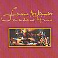

Celtic Lyrics Corner > Artists & Groups > Loreena McKennitt > Live In Paris And Toronto > Skellig
|  | Skellig |
| Credits : | Loreena McKennitt |
| Appears On : | The Book Of Secrets ; Live In Paris And Toronto |
| Language : | English |
Lyrics :
Oh light the candle, John, the daylight has almost gone
The birds have sung their last, the bells call all to mass
Sit here by my side for the night is very long
There's something I must tell before I pass along
I joined the brotherhood, its books were all to me
I scribed the words of God and much of history
'Twas not my place to leave this life of solitude
Until one day there came a boat of the brotherhood
I'd hear the ocean breathe, exhale upon the shore
I knew the tempest's blood, its wrath I would endure
And so the years went by within my rocky cell
With only a mouse or bird, my friend, I loved them well
And so it came to pass I'd come here to Romani
And many a year it took 'til I arrived here with thee
On dusty roads I walked and over mountains high
Through rivers running deep beneath the endless sky
Now beneath these jasmine flowers, amidst these cypress trees
I give you now my books and all their mysteries
Hearken, John, my word, let not these keys be lost
The secrets lie within the writings of the past
Oh light the candle, John, the daylight is almost gone
The birds have sung their last, the bells call all to mass